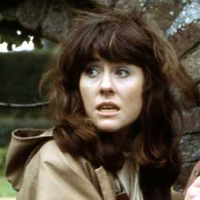

|
| Home The Doctors The Companions The Villians Show History |
|
|
Sarah Jane SmithSarah Jane Smith is a fictional character played by Elisabeth Sladen in the long-running BBC Television science fiction series Doctor Who and two of its spin-offs. Sarah Jane is one of the Doctor's longest serving companions co-starring in 18 stories with the Third and Fourth incarnations of the Doctor, on the programme from 1973 to 1976 (seasons 11 – 14). She and robotic dog K-9appear in the 1981 television pilot K-9 and Company. She returns in the Fifth Doctor story The Five Doctors (1983) and the 30th-anniversary story Dimensions In Time (1993). After the programme's revival in 2005, she appears in several episodes with the Tenth Doctor, and once with the Eleventh Doctor, and as the central character of her own series The Sarah Jane Adventures from 2007 to 2011. |
Christine O'Brien Ann Marie Skjold |
Content derived from the Doctor Who Wikipedia |